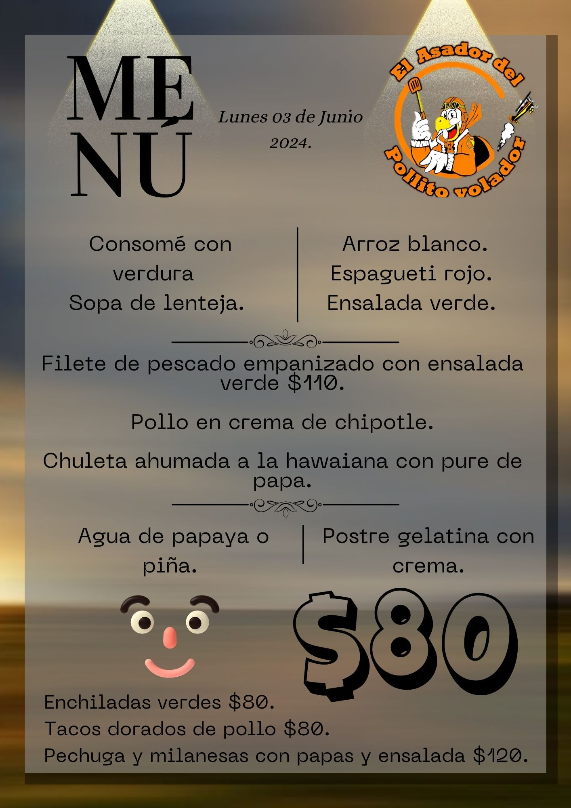

Proyectos del Restaurante
He creado menús para un restaurante utilizando la plataforma Canva y recursos de Photoshop, lo que me ha permitido realizar cambios rápidos solicitados por el restaurante en tiempo real. Esta versatilidad me ha permitido trabajar de manera remota, incluso desde mi celular, cuando no tenía acceso a mi computadora. Esta experiencia me ha enseñado a ser ágil y eficiente en la gestión de tareas y en la creación de contenido atractivo y profesional.
